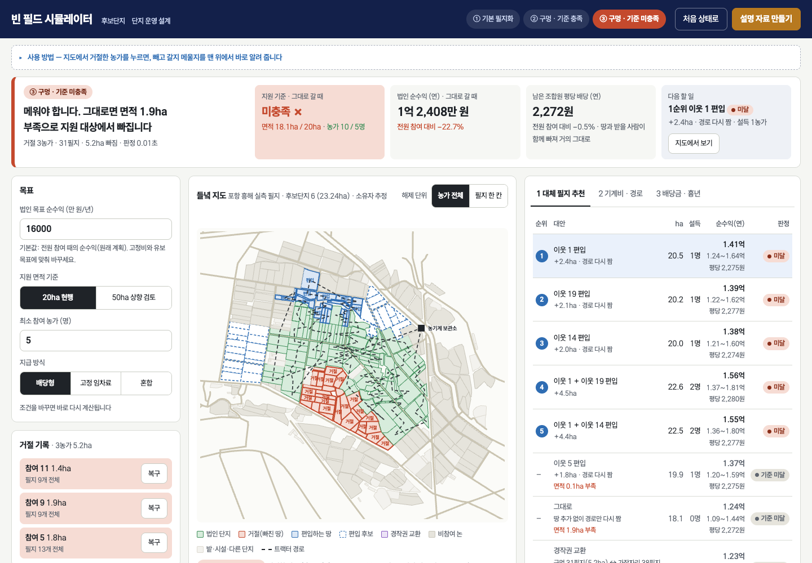
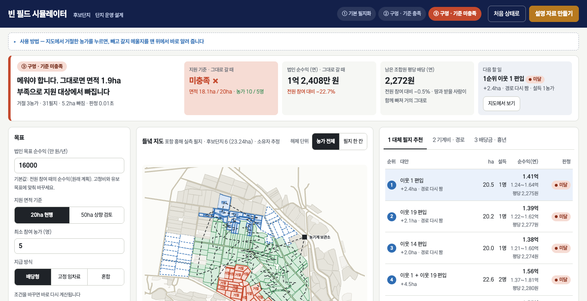
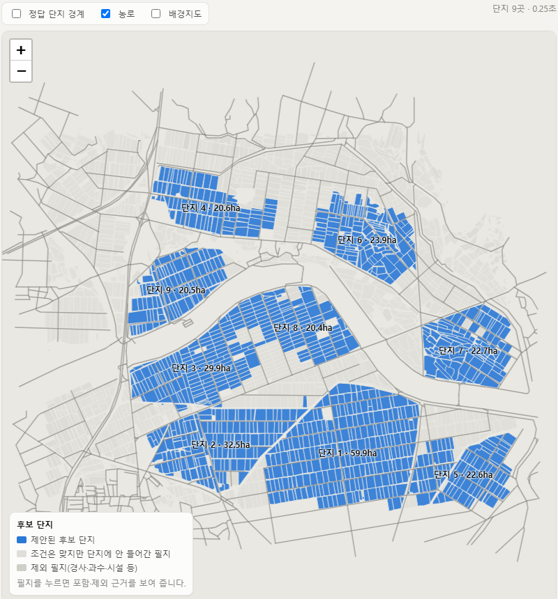

농가 인구 중 65세 이상이 51.0%(국가데이터처, 2025 농림어업총조사 확정, 2026.9), 경북 농가는 59.2%(동북지방통계청, 2024)입니다. 정부는 땅 주인은 그대로 두고 법인이 함께 짓는 공동영농을 2030년 100개소까지 늘리고, 20ha·농업인 5명 이상 법인에 2년 최대 20억 원을 줍니다(농식품부, 2026.3). 면적 기준을 50ha로 올리고 연접도를 보는 개선안이 2026년 11월 나옵니다(농식품부, 2026.8~9).
"구역을 정하고 신청서까지, 법인은 몇 개월이 걸린다." "이미 선정된 법인은 도면이 지도에 다 만들어져 있고, 거절 단지가 생겨도 인근지로 넓히면 된다는 걸 안다. 필요한 쪽은 2028년 신청을 준비하는 예비 법인이다." 문경·영덕 법인 대표는 농가를 설득하려고 설명회를 10회 이상 열었다고 말했습니다(농민신문, 2025.1).
공동영농 법인을 준비하는 사무장은 농가 한 곳이 거절하면 ① 20ha를 지킬 수 있는지 ② 남은 조합원의 평당 배당이 얼마나 주는지 ③ 대신 어느 땅의 주인을 찾아가야 하는지를 숫자 없이 정하고, 설명회를 다시 엽니다.
| 문제의 크기 | 숫자 | 기준·출처 |
|---|---|---|
| 설득 비용 | 설명회 10회 이상, 1~1.5년 | 문경·영덕 법인 대표 발언(농민신문 2025.1) |
| 1년 늦게 묶으면 | 20ha 단지 기준 약 1억 4천만 원 소득을 놓침 | 문경 늘봄 평당 2,350원→4,700원(경북매일 2024.9)으로 계산 |
| 지원 자격 | 2년 최대 20억 원이 1년 뒤로 밀림 | 공모는 1년 단위(농식품부 2026.3) |
| 배당 설명 | 농가별 73만~1,800만 원, 24.7배 격차 | 영덕 달산 2024 첫 배당(농민신문 2025.1) |
| 배당 근거 | 지구별 평당 1,500~4,000원, 산정 근거 공개된 적 없음 | 경북 배당 법인 10개소(경북매일 2026.3) |
| 수치 만들 사람 | 영농 디지털 기술을 안 쓰는 법인 58.6% | 2024년 조사(원문 재확인 중) |
정부 민·관 협의체가 "농지 집적화"와 "소득 배분 기준"을 남은 과제로 꼽고 11월 개선안을 냅니다(2026.7.27). 경북 공동영농 지구는 2023년 2곳에서 2026년 29~31곳으로 늘었습니다(경북도). 예비 법인이 가장 많이 생기는 해가 2027년입니다.


거절 필지를 빼면 면적(20ha 현행 / 50ha 상향 검토)과 최소 농가 수 충족 여부를 즉시 판정합니다. 못 채우면 기준과 법인 목표 순수익을 함께 맞추는 이웃 필지 편입 후보를 순위로 보여 줍니다.
지급 방식(배당형·고정 임차료·혼합)별로 남은 조합원의 평당 배당을 범위로 보여 주고, 흉년이면 손해를 누가 지는지(배당형은 조합원, 임차료형은 법인) 첫 줄에 적습니다. 시뮬레이션 결과, 한 농가가 빠져 법인 순수익이 6% 줄어도 평당 배당은 약 1%만 줍니다. 땅과 배당받을 사람이 함께 빠지기 때문입니다.
대표 보고용 한 장과 농가 설명용 큰 글자 한 장을 뽑습니다. 농어민 디지털 역량은 일반 국민의 72.4%, 고령층은 56.2%라(NIA 2025 디지털정보격차 실태조사) 조합원은 종이로 받습니다.
팜맵·흙토람·연속지적도(공개 데이터, 인증키 2개)로 필지 인접 그래프를 만들고, 연결성·면적·농가 수·도로·경사 제약 아래 묶음을 탐색합니다. 서버 없이 브라우저에서 계산합니다. 소유자는 비공개라 필지 수로 농가 수를 추정합니다.
| 인터뷰 전 | 인터뷰 후 | |
|---|---|---|
| 1순위 고객 | 선정 법인의 사무장·대표 | 설립·신청을 준비하는 예비 법인 대표·사무장 |
| 쓰는 때 | 거절 당일 | 구역 구상 → 설득(거절) → 신청서 작성 |
| 채널 | 법인 콜드콜 | 시군 예비법인 교육·설명회, 농어촌공사 지사 |
예비 법인 본인 인터뷰는 0건입니다. "거절 뒤 재설계에 2주"는 아직 가설이고, 다음 2주 검증 대상입니다(8장).
| 층 | 정의 | 규모 | 근거 |
|---|---|---|---|
| 정책 목표 | 공동영농법인 육성 | 2030년 100개소 · 경북 100개소·9천ha | 농식품부 2026.3 · 경북도 |
| 조직화 들녘 | 들녘경영체·공동경영체·공동영농 지구 | 500~700곳, 6만~10만ha | 2015년 말 224개소·51,114ha 기준 추정 |
| 2027~28 도달 가능 | 확산사업 누적 36 + 경북 31지구 + 예비사업자 | 연 100~200곳 | 2027 예산안, 경북도 공고 |
| 1년 차 목표 | 경북 시군 예비법인 교육 참석 법인 | 10곳 | 경주·상주·구미·문경·의성 |
10곳 × 설계 1회 2,000만 원 = 2억 원(보조금 교육·컨설팅 비목을 거칠 때) / 구독만이면 10곳 × 연 100만 원 = 1,000만 원. 비목 인정 여부가 갈림길입니다(7장).
| 한국 | 일본 | 핀란드·덴마크 | |
|---|---|---|---|
| 필지 구조 | 필지당 0.13~0.18ha, 농가당 5~8필지(대리값) | 집적률 62.1%, 2030년 KPI 70% | 교환 설계를 공공이 수행 |
| 돈 내는 주체 | 보조금 비목·시군(농가 직접 지불 약함) | 국가 정액 보조, 시정촌 위탁 | ha당 €1,000~1,300 / 3,500DKK 보조 |
| 설계 도구 | 없음. 종이 지도와 감 | 농업위원회 지원 시스템(정보 관리까지) | 측량 기관 전문가 |
| 기준값 | 집적률·분산도 공표 임계값 없음 | 1ha 団地 비율이 보조금 요건 | 거리 단축 법정 요건 |
한국은 "얼마나 모였는가"를 재는 공식 지표가 없습니다. 흥해 실측처럼 공개 데이터로 읍면 지표를 먼저 계산해 공개하는 쪽이 기준값을 쓰게 됩니다. 11월 개선안에 집적화 지표가 들어가면 설계 수요가 제도가 됩니다.
| 비교 항목 | 대표의 현장 지식 + 종이 지도 | 시군·농어촌공사 컨설팅 | 팜맵·농업e지(공개 지도) | 측량·경지정리 용역 | 빈 필드 시뮬레이터 |
|---|---|---|---|---|---|
| 거절 뒤 대안까지 | 수일~2주(답사) | 수주(일정 조율) | 해당 없음(조회만) | 수개월 | 판정 1초, 당일 결정 |
| 20/50ha·5명 기준 판정 | 암산 | 사람이 확인 | 없음 | 있음(유료) | 있음, 기준 바꿔 재계산 |
| 평당 배당·흉년 시나리오 | 감으로 약속 | 일부 | 없음 | 없음 | 방식별 범위 + 흉년 |
| 농가에게 건넬 자료 | 말 | 보고서 | 없음 | 도면 | 큰 글자 한 장 인쇄 |
| 지역 사정(이장·친분·소유자) | 가장 잘 앎 | 잘 앎 | 없음 | 없음 | 없음. 소유자 비공개라 필지 수로 추정 |
| 신뢰 | 수십 년 관계 | 공공기관 | 공공 | 면허 | 학생팀, 실적 0 |
| 비용 | 0원 | 개소당 3,000만, 보조 90% | 무료 | 수천만 원 | 구독 연 100만/50ha 또는 설계비 |
거절 당일에 숫자가 나옵니다. 기준·순수익·평당 배당·1순위 대안을 한 줄로.
공개 데이터만으로 읍면 전체(2,666필지)를 1초 안에 돌립니다. 법인 자료가 없어도 시작합니다.
결과가 그대로 신청서 수치 표와 농가 설명 자료가 됩니다. 한 번 계산으로 서류 셋.
지역 사정은 법인이 입력하고 우리는 계산합니다. 현장 동행(Get)으로 시작해 셀프 도구(Keep)로 넘깁니다.
| 누가 | 왜 내나 | 얼마 | 가격 앵커 |
|---|---|---|---|
| ① 법인이 쥔 보조금의 교육·컨설팅 비목 | 신청서·총회 자료가 설계 보고서로 나옴. 자부담 10% | 설계 1회 2,000~3,000만 원 | 들녘경영체 교육·컨설팅 개소당 3,000만 원(전남 2024). 공동영농 확산 지원 범위에 교육·컨설팅 포함 |
| ② 시군 농정과 | 예비 법인 발굴용 읍면 후보지 지도 | 읍면 3~10곳 5,000만 원~ | 농촌공간계획 용역 4~4.6억 원(110여 시군) |
| ③ 법인 구독(사후 운영) | 거절·변경 때마다 다시 계산 | ha당 연 2만 원 (50ha 연 100만 원) | 미국 농업 SW 이용자 51%가 에이커당 연 $5 미만(Purdue 2019) |
공동영농 확산 시행지침 원문에서 교육·컨설팅 비목에 설계 용역·소프트웨어가 들어가는지 아직 확인하지 못했습니다. 안 되면 인증 컨설팅 업체와 하도급으로 시작합니다. 농지법 제7조의2(임대차 중개 금지) 때문에 서비스는 '설계·자문'이고 매물·수수료 기능은 넣지 않습니다.
포항 흥해 실측 2,666필지·489ha 지도(팜맵·흙토람·연속지적도). 후보단지 9곳 0.25초, 빈 필드 판정 0.01초, 대표·농가용 설명 자료 인쇄. 소스는 깃허브 저장소에 있습니다.
2026.10.29 경주시청·상주시청 농정과 공동영농 담당 2명(전화). 법인 대표 0명(소개 거절), 농어촌공사 0명.
2026.11.1 포스텍-한동대 Mini TeX-Corps 최종발표. 비즈니스 모델 캔버스와 경험만 묻는 인터뷰 질문지 작성.
실제 사용자, 매출, 계약·MOU, 실제 단지 경계로 한 정확도 검증(가상 읍면 F1만 있음, 성능 근거로 쓰지 않음).
| 다음 2주 (11.5~11.19) | 목표 | 통과 기준 | 마감 |
|---|---|---|---|
| 예비 법인·교육 참석 농가 인터뷰 | 5명 | 3명 이상이 "거절 뒤 재설계에 1주 이상 걸렸다"고 말함 | 11.12 |
| 시군 예비법인 교육·설명회 일정 확보 | 경북 2곳 | 참관 또는 10분 소개를 허락한 곳 1곳 | 11.19 |
| 농어촌공사 경주·상주지사 통화 | 1건 | 컨설팅 때 쓰는 기준표 유무와 임차료 수준 확인 | 11.12 |
| 시제품 현장 시연 | 2곳 | 화면을 본 뒤 연락처를 남기거나 다음 약속을 잡은 곳 1곳 | 11.19 |
| 수익 가설 확인 | 2명 | "지난해 필지 정리·컨설팅에 얼마 썼고 누가 결재했나"에 금액이 나옴 | 11.19 |
"마지막 거절 뒤 무엇부터 하셨나요?" "대체 땅을 정하기까지 며칠, 몇 번 답사하셨나요?" "남은 농가가 무엇을 물었나요?" "거절 때문에 지원사업에서 탈락한 적이 있나요?" "쓰시겠어요?"는 묻지 않습니다.
소유·경작자 데이터는 농업위원회가 쥐고 있고 개인정보 규제가 강함. 集落(마을) 단위 합의 관행, 일본 농지법, 일본어 UI와 현지 영업 인력. 위 수치는 2차 자료가 섞여 있어 원문 확인 전입니다.
| 국가 | 진출 이유 | 방식 | 순서 |
|---|---|---|---|
| 일본 | 같은 구조, KPI 제도화, 설계 계산 공백 | 수탁사·JA 파트너, 레이어 공급 | 1순위 |
| 핀란드·덴마크 | 교환 설계에 ha당 보조(€1,000~1,300 / 3,500DKK) | 공공 측량 기관 알고리즘 공급 | 2순위 |
| 동남아 | 소필지 구조는 같으나 지적·공개 데이터 부족 | 보류 | — |
해외에 가져갈 것은 화면이 아니라 "설계 전후 블록 수가 얼마나 줄었는가"라는 숫자입니다. 경북 실측 3곳의 전후 KPI가 그 증거입니다.
역할(예시): 기획·고객 인터뷰
지금 하는 일: 시군·법인 인터뷰 섭외, 질문지
역할(예시): 데이터·알고리즘
지금 하는 일: 팜맵·흙토람 연동, 제약 최적화
역할(예시): 웹 화면
지금 하는 일: 빈 필드 화면, 설명 자료 인쇄
역할(예시): 사업모델·발표
지금 하는 일: 수익 근거, BMC, 공모 자료
공동영농 법인을 만들어 본 사람이 팀에 없습니다. 채울 방법: 시군 담당자 소개로 예비 법인 대표 1명 자문, 대구경북연구원 공동영농 교육 강사 인터뷰. 기한 11월 말.
공개 데이터만으로 실제 읍면(흥해 2,666필지)을 돌리는 시제품을 두 달 안에 만들었고, 인터뷰 결과에 따라 고객을 바꿨습니다. 포스텍·한동대의 데이터·컴퓨팅 수업과 창업 과정(Mini TeX-Corps)을 함께 거쳤습니다.
| 요청 | 구체적으로 | 우리가 들고 갈 것 |
|---|---|---|
| ① 인터뷰 연결 | 공동영농을 준비 중인 예비 법인 대표·사무장 3명, 시군 농정과(포항·구미·문경 중) 1명, 농어촌공사 경북본부 1명 | 흥해 실측 시제품 시연, 10분 질문지(경험만 묻는 질문), 결과 공유 |
| ② 채널 접근 | 경북도·시군의 공동영농 리더 교육, 예비사업자 교육, 설명회에 참관 또는 10분 소개 기회 | 농가용 설명 자료 한 장 샘플 |
| ③ 멘토링 | 보조금 교육·컨설팅 비목으로 설계·소프트웨어 비용을 받는 구조(시행지침 해석), 농지법 중개 금지와 '설계·자문'의 선 | 수익 흐름 근거 문서 |
| ④ 공모전·학술대회 추천 | 기술(공간 데이터·제약 최적화) 또는 지역(경북 농업대전환) 성격에 맞는 공모전, 학술대회 추천 | 알고리즘·실험 설계 문서 |
| ⑤ 돈을 쓴다면 | 투자 요청은 없습니다. 소액(300만 원)이면 흙토람 전수 조회, 현장 교통비, 시연용 태블릿 | 지출 내역 공개 |
11.12 데모데이까지 인터뷰 5건과 시연 2곳.
2027.3 공모(2027년 선정) 전에 경북 예비 법인 3곳 무료 설계, 설계 전후 KPI 공개.
2027 하반기 보조금 비목 또는 시군 용역으로 첫 유료 계약 1건.
예비 법인이 우리 도구를 '지금' 필요로 하는지, 그리고 예비 법인을 어디서 만나는지입니다. 시군 담당자 두 분의 말로 방향을 바꿨지만, 예비 법인 본인의 말은 아직 한 마디도 듣지 못했습니다.
"예비 공동영농 법인"을 1순위 고객으로 잡은 것이 타당한지, 그리고 시군·도의 예비법인 교육·설명회를 첫 채널로 쓰는 방법이 현실적인지입니다.
MVP 개발 중 — 흥해 실측 필지로 만든 시제품은 있으나 실제 사용자는 없습니다.